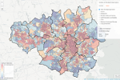

Maps
The Lab produces interactive maps based on the Leaflet library using JavaScript, R and Shiny. The maps are designed to allow users to interactively interrogate the data and also provide links to the raw data.
English indices of deprivation 2015 for Greater Manchester
Visualising the data released by the Department for Communities and Local Government for Lower-layer Super Output Areas (LSOA) in Greater Manchester.
Visualising the data released by the Department for Communities and Local Government for Lower-layer Super Output Areas (LSOA) in Greater Manchester.
 Trafford Road Casuality Map
Trafford Road Casuality MapInteractive visualisation of road casualty data recorded by Greater Manchester Police during 2016.